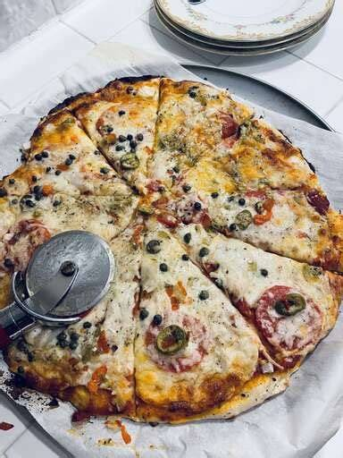

Pizza Recipe

Description
This quick pizza dough recipe simply involves mixing a few basic ingredients and patting the dough into the pan for a delicious crust — no need to wait for the dough to rise with this recipe!
Ingredients
- 3 cups all-purpose flour
- 1 tablespoon white sugar
- 1 (.25 ounce) package active dry yeast
- 1 teaspoon salt
- 1 cup warm water (110 degrees F/45 degrees C)
- 2 tablespoons vegetable oil
Steps
- Gather all ingredients.
- Combine flour, sugar, yeast, and salt in a large bowl. Mix in warm water and oil until dough comes together.
- To bake the pizza: Preheat the oven to 375 degrees C (190 degrees C). Pat and stretch dough onto a large pizza pan; cover with pizza sauce and top with pepperoni slices and shredded cheese, or desired toppings. Bake in the preheated oven until crust is lightly browned, 20 to 25 minutes.
Home